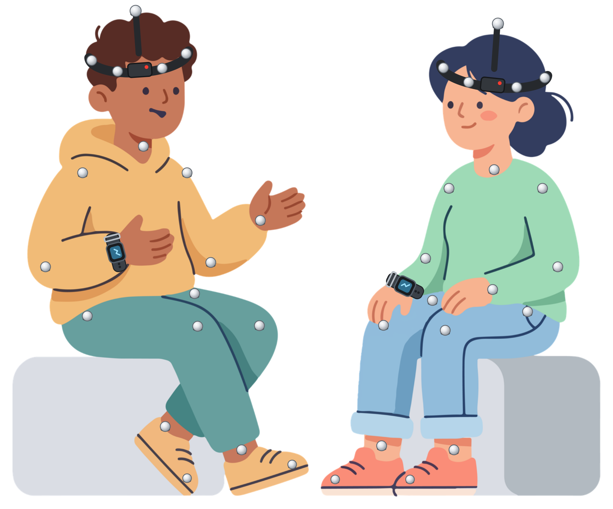
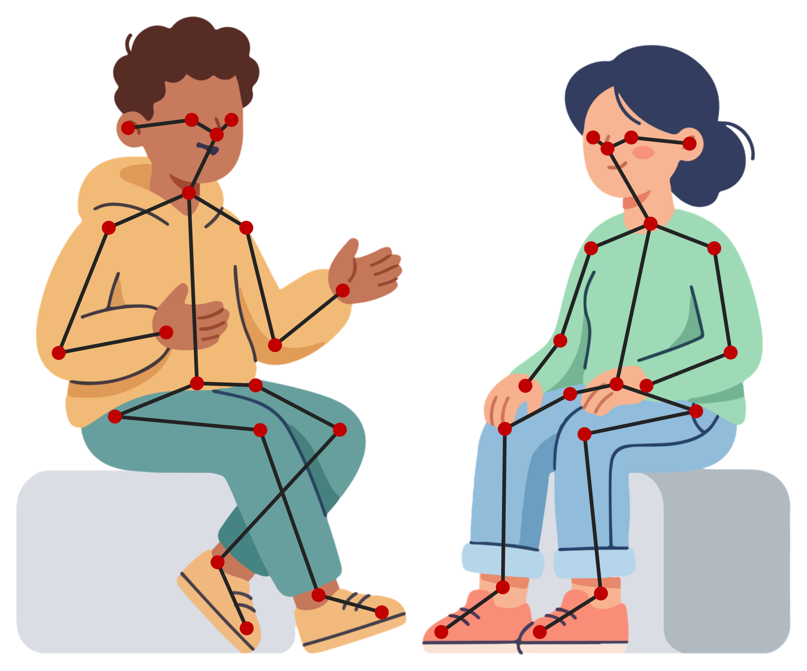
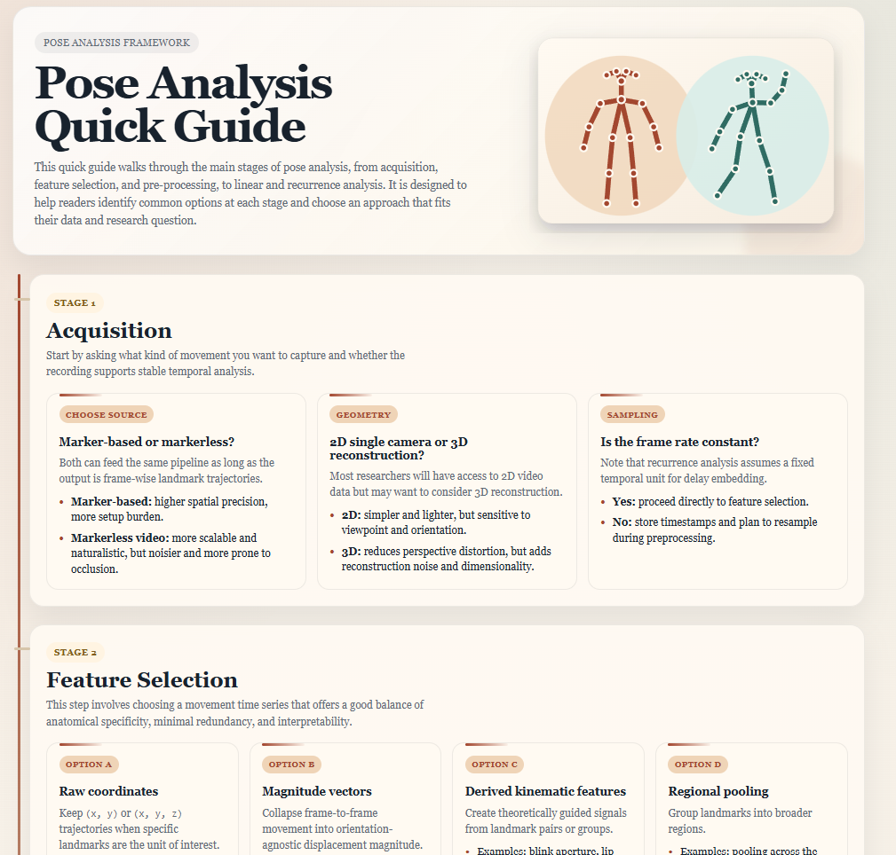
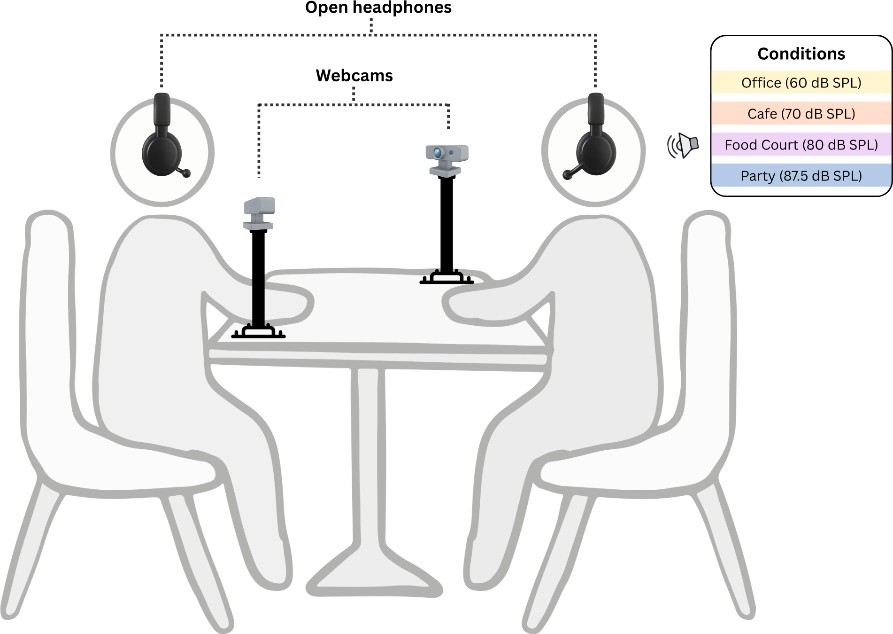
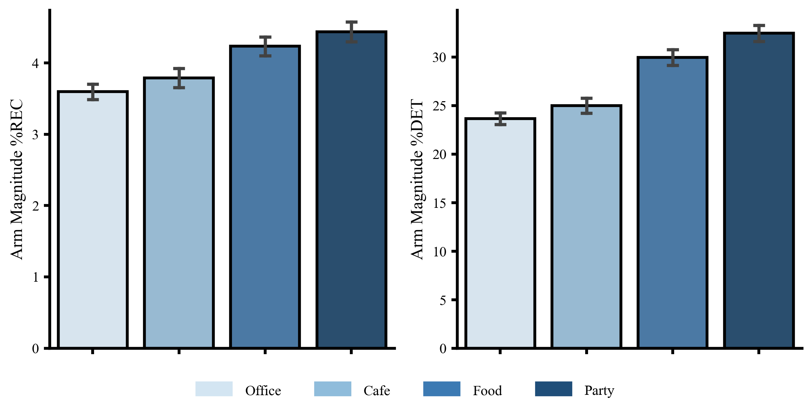
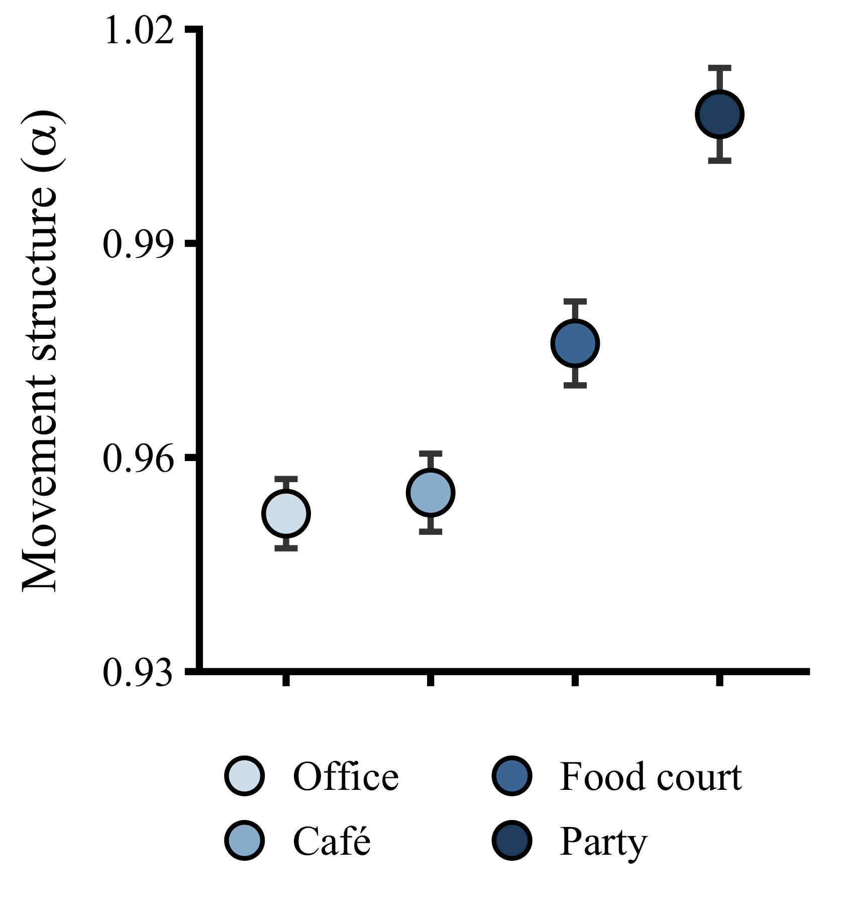
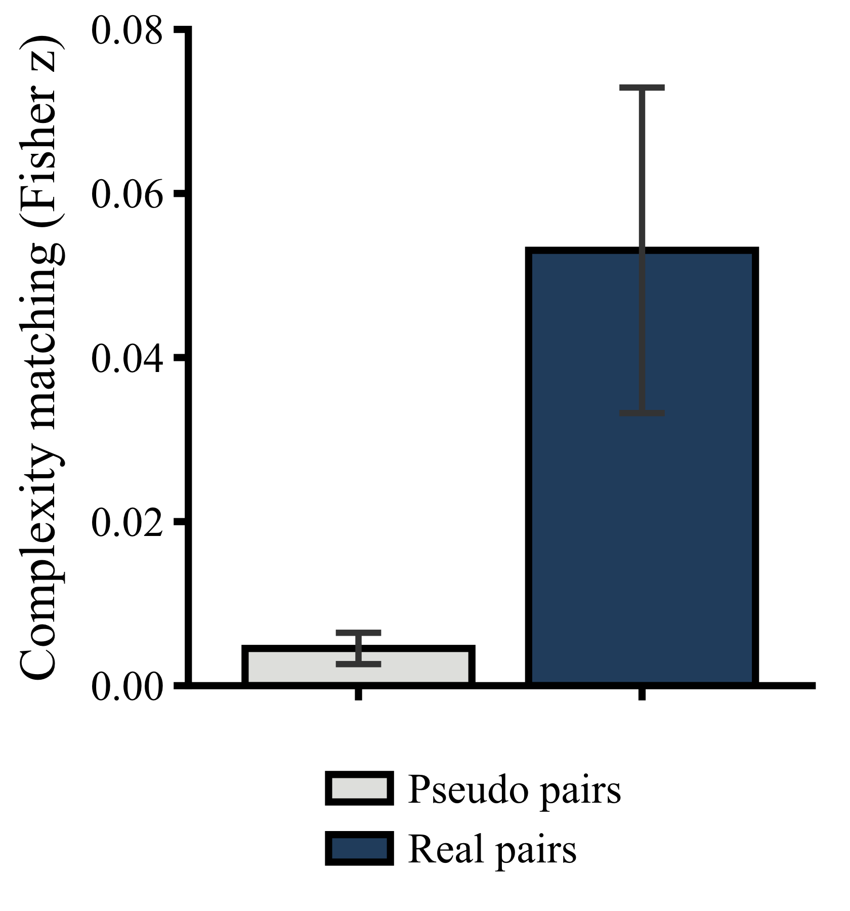
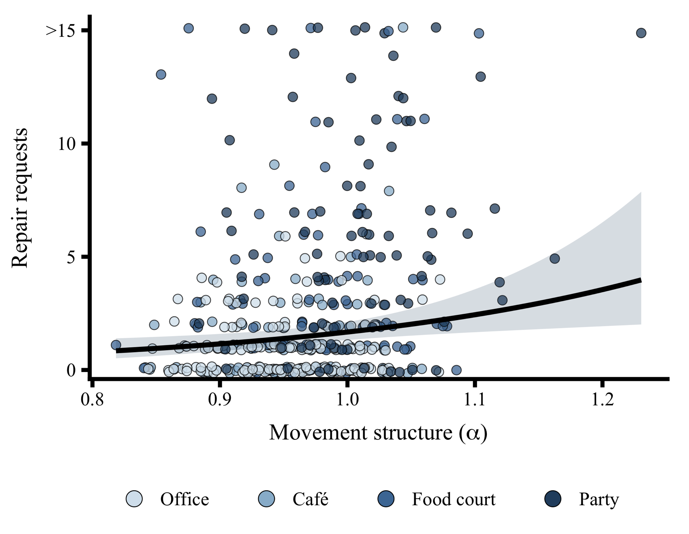

Core Social Process
Coordination is a fundamental feature of social exchange.
Cathy Macpherson
Postdoctoral Research Fellow
cathy.macpherson@mq.edu.au
When people converse, they align their behaviour with one another, coordinating movement, speech, and physiology.
Coordination is a fundamental feature of social exchange.
In noisy places, speech is masked and communication breaks down more often.
Does coordination shift as communication becomes more difficult?


Sale, C., Macpherson, M. C., Patil, G., Miles, K., Kallen, R., Wallot, S., & Richardson, M. J. (2026). Nonlinear methods for analyzing pose in behavioral research.



When pairs stood rather than sat, complexity matching did increase with noise.



Can we predict communication breakdowns in real time?